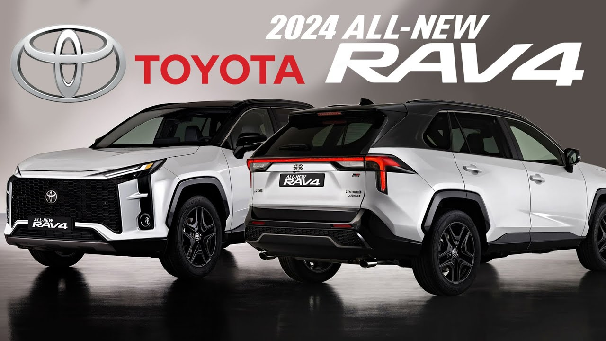

En Bolivia, el parque automotriz cuenta con más de 2 millones de autos y una amplia variedad de marcas, siendo la mayoría provenientes de Asia. Sin embargo, Toyota, Nissan y Suzuki son las marcas que lideran el mercado boliviano.
Esta lista de los autos mas vendidos en toda Bolivia se basan en una encuesta realizada en toda Bolivia donde se determino cuales son los mejores autos del Mercado .
Susuki
Suzuki es la marca más vendida en Bolivia representando el 30% del mercado total. Tres de cada diez autos son de esta marca y los modelos destacados son SUVs, minivans y sedanes; en general, vehículos familiares para moverse dentro de la ciudad.
Además, Suzuki tiene precios accesibles y es alrededor del 20% a 30% menos costosa que otras opciones. Cuenta con una amplia disponibilidad de autopartes y diversos concesionarios y puntos de reparación por todo el país. La comercialización principal se realiza a través de Imcruz, empresa que actualmente es la concesionaria más grande y conocida en Bolivia.
Ver AutosToyota
Toyota, en particular, ha consolidado su presencia como una marca confiable y de alta calidad, ganándose la preferencia de los consumidores gracias a su innovación continua, fiabilidad y compromiso con la excelencia. Toyota ha logrado posicionarse como líder indiscutible en el mercado de Bolivia, y convertirse en la marca más querida por los bolivianos, según estudios del sector realizados en febrero de este año. De esa manera, Toyota se alza como la primera opción para aquellos que buscan un vehículo que combine confiabilidad, durabilidad y una garantía que respalde cada kilómetro recorrido. Ese logro es el resultado de una sólida reputación construida en varias décadas de presencia en el mercado boliviano.
- Autos Toyota más Vendidos en Bolivia Toyota ha consolidado una sólida presencia en el mercado boliviano, destacando por su fiabilidad, durabilidad y eficiencia. Entre los modelos más populares encontramos:
Encuesta de los 10 autos mas vendidos
Descubre los vehículos que destacan por su durabilidad y rendimiento.
Encuentra vehículos adaptados para personas altas o de baja estatura y con los asientos más cómodos.
Descubre más